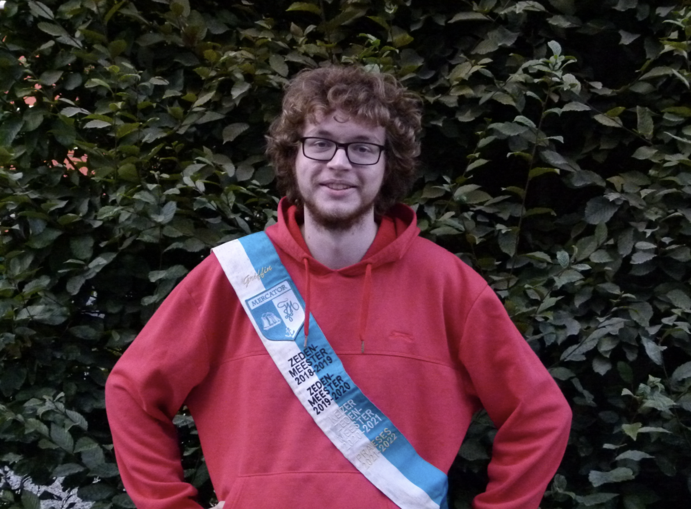
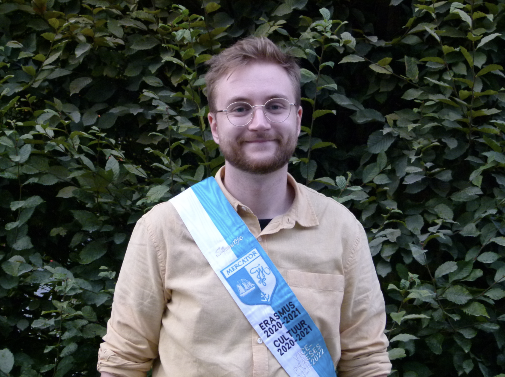
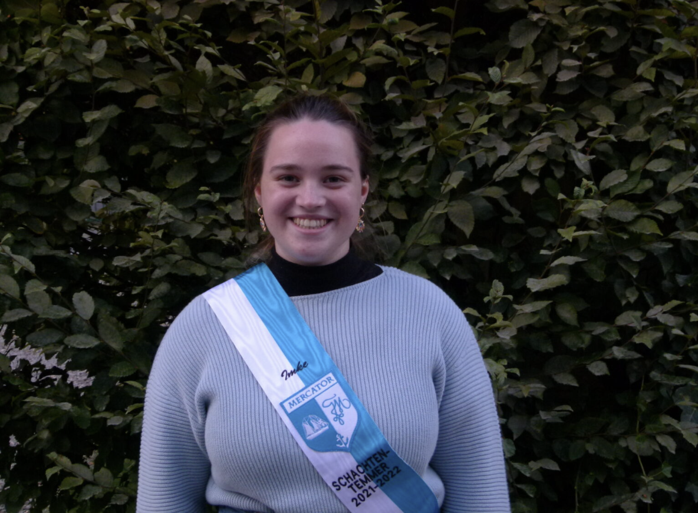
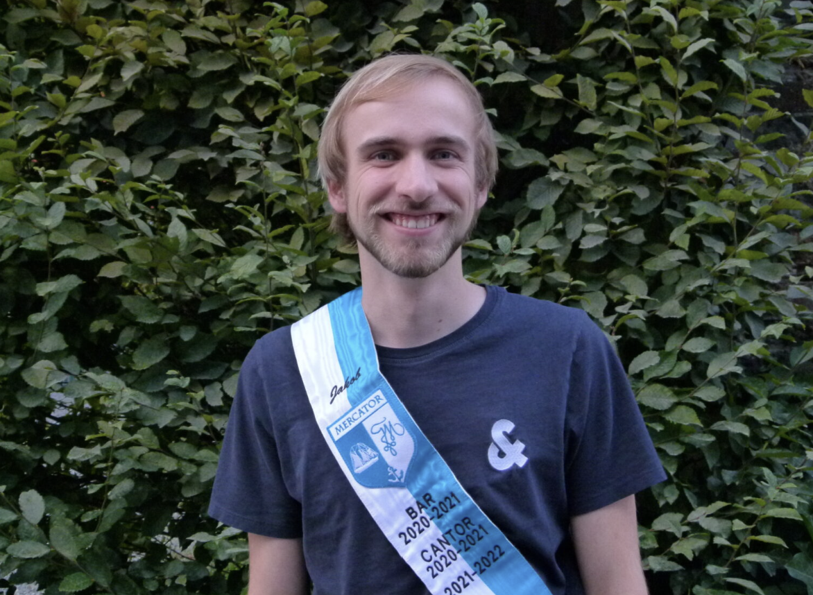
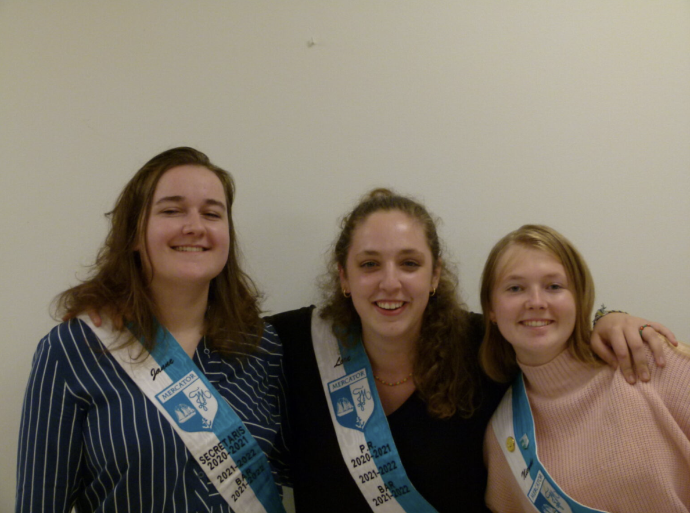
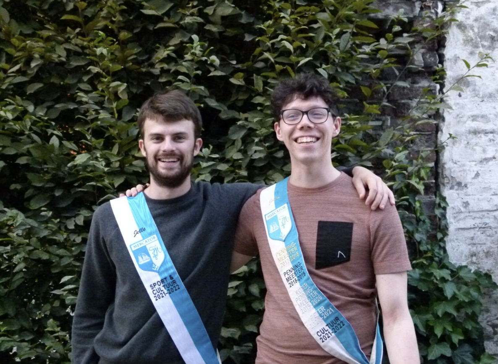
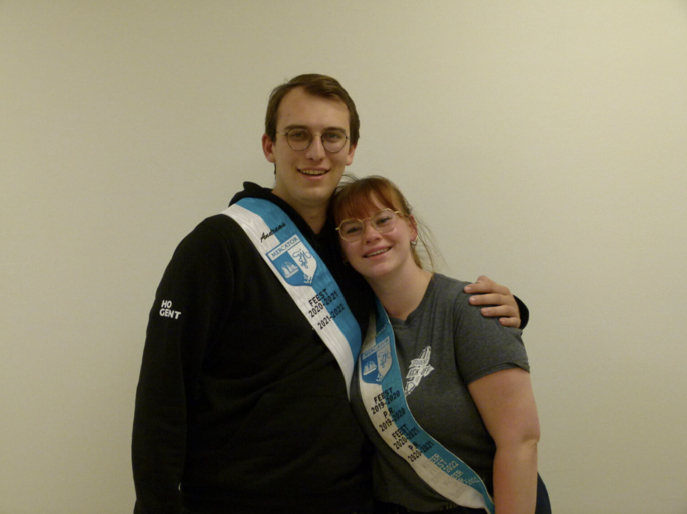

Praesidium 2021-2022
Praeses

Griffin Woodgate
Studeert: Graduaat programmeren
Geboren op: 31/05/2000
Woont in: Lampernisseeeeee
Ik ben momenteel: Single :'/
Favoriete:
- Cantusliedje: Black velvet band
- Koekje: Uw moeder (want ze is een plopkoek)
- Dino: Anjanath
Beste herinnering aan Mercator: "Massacantus in mijn schachtenjaar, paté gegaan op rodenbach en in de bieremmer gebarft."
Vice-Praeses

Maarten Mahieu
Studeert: Niets, Werkende :'/
Geboren op: 23/09/1996
Woont in: Ik ben van Ieper, maar woon in Hent
Ik ben momenteel: Eunuch
Favoriete:
- Cantusliedje: Hänselien
- Koekje: Jaffa Cakes (Pim's van den Aldi)
- Dino: De minmi is te cute voor woorden
Beste herinnering aan Mercator: "Mijn allereerste Massacantus met Mercator ga ik nooit vergeten. Iedereen poepeloerezat, ik door mijn stoel gezakt en Milan op mijn lint geschreven. Ahhh goeie tijden :'|"
Secretaris
Janne De Clercq
Studeert: Verpleegkunde
Geboren op: 08/05/2001
Woont in: Elversele
Ik ben momenteel: Single
Favoriete:
- Cantusliedje: T is al te lang geleden
- Koekje: Dinokoeken
- Dino: Die met zijn lange nek
Beste herinnering aan Mercator: "De quarantaine doorbrengen op kot"
Penningmeester
Brecht Blokerije
Studeert: Accounting & Fiscaliteit
Geboren op: 12 /12/2001
Woont in: In de week op beste kot van Gent, Home Mercator! In het weekend, het
prachtige Affligem.
Ik ben momenteel: Single
Favoriete:
- Cantusliedje: Clublied van Mercator
- Koekje: Marguerites van de Colruyt
- Dino: Triceratops
Beste herinnering aan Mercator: "Online spelletjes avond toen we Secret Hitler speelden"
Schachtentemmer

Imke Stalmans
Cantor

Jakob Van der Vennet
Studeert: Geschiedenis
Geboren op: 14/09/2000
Woont in: Aalter
Ik ben momenteel: Occupied
Favoriete:
- Cantusliedje: When Johnny comes marching home again
- Koekje: Boudoirkes
- Dino: Ellen als ze haar tanden poetst
Beste herinnering aan Mercator: "Cantussen bijwonen met Mercator, al dan niet nog in de schachtenbak"
Bar

Nienke Demuynck
Studeert: Graduaat Accounting Administration
Geboren op: 04/10/2001
Woont in: Gullegem
Ik ben momenteel: Alleen
Favoriete:
- Cantusliedje: Alouette (het enige Frans dat ik beheers)
- Koekje: Nic-nac'jes ook wel letterkoekjes genoemd
- Dino: Stegosaurus
Beste herinnering aan Mercator: "Maanden in quarantaine leven met de pro-senior"
Lore Herremans
Studeert: Bedrijfsmanagement - KMO
Geboren op: 23/06/2000
Woont in: Gent-Aalst
Ik ben momenteel: Happy Single
Favoriete:
- Cantusliedje: Die Lore
- Koekje: American cookies met bruine én witte chocolade
- Dino: Metriacanthosaurus (omdat die glitters heeft)
Beste herinnering aan Mercator: "Alle herinneringen zijn fantastisch! Elke keer dat Mercator samenkomt is het ambiance!"
Janne De Clercq
Studeert: Verpleegkunde
Geboren op: 08/05/2001
Woont in: Elversele
Ik ben momenteel: Single
Favoriete:
- Cantusliedje: T is al te lang geleden
- Koekje: Dinokoeken
- Dino: Die met zijn lange nek
Beste herinnering aan Mercator: "De quarantaine doorbrengen op kot"
Cultuur

Jelle De Decker
Studeert: Industriële wetenschappen
Geboren op: 11/11/1996
Woont in: Gent
Ik ben momenteel: Single
Favoriete:
- Cantusliedje: Mercator clublied obviously
- Koekje: Chocolade wafels van de Colruyt
- Dino: Deinonychus
Beste herinnering aan Mercator: "Online quiz van Maarten"
Jolan Creaghs
Studeert: Industrieel ingenieur elektromechanica
Geboren op: 27/01/1998
Woont in: Gent
Ik ben momenteel: Bezet
Favoriete:
- Cantusliedje: Molly Malone
- Koekje: Gedeelde eersste plaats voor de prins sterrenkoekjes en de lulu de beer chocolade koekjes
- Dino: Ankylosaurus
Beste herinnering aan Mercator: "Cantussen met de boys"
Feest

Andreas Moerman
Studeert: Vastgoed
Geboren op: 14/07/1999
Woont in: Wortegem
Ik ben momenteel: Bezet
Favoriete:
- Cantusliedje: /
- Koekje: Prins koeken
- Dino: Triceratops
Beste herinnering aan Mercator: "Bondingsweek"
Cheyenne Peynsaert
Studeert: Event- en projectmanagement en banaba Marketing
Geboren op: 29/11/1996
Woont in: Gent
Ik ben momenteel: Bezet
Favoriete:
- Cantusliedje: What shall we do with the drunken sailor
- Koekje: Vitabis
- Dino: Platvoet (en zijn vriendjes)
Beste herinnering aan Mercator: "Mijn eerste cantus"
PR
Lore Herremans
Studeert: Bedrijfsmanagment - KMO
Geboren op: 23/06/2000
Woont in: Gent-Aalst
Ik ben momenteel: happy Single
Favoriete:
- Cantusliedje: Die Lore
- Koekje: American cookies met bruine én witte chocolade
- Dino: Metriacanthosaurus (omdat die glitters heeft)
Beste herinnering aan Mercator: "Alle herinneringen zijn fantastisch! Elke keer dat Mercator samenkomt is het ambiance!"
Cheyenne Peynsaert
Studeert: Event- en projectmanagement en banaba Marketing
Geboren op: 29/11/1996
Woont in: Gent
Ik ben momenteel: Bezet
Favoriete:
- Cantusliedje: What shall we do with the drunken sailor
- Koekje: Vitabis
- Dino: Platvoet (en zijn vriendjes)
Beste herinnering aan Mercator: "Mijn eerste cantus"
Sport
Jelle De Decker
Studeert: Industriële wetenschappen
Geboren op: 11/11/1996
Woont in: Gent
Ik ben momenteel: Single
Favoriete:
- Cantusliedje: Mercator clublied obviously
- Koekje: Chocolade wafels van de Colruyt
- Dino: Deinonychus
Beste herinnering aan Mercator: "Online quiz van Maarten"
Lotte Mendock
Studeert: Dierenzorg
Geboren op: 14/09/2001
Woont in: Parking
Ik ben momenteel: Bang van relaties
Favoriete:
- Cantusliedje: My bonny lies over the ocean
- Koekje: Lu-beertjes
- Dino: Savannasaurus
Beste herinnering aan Mercator: "Zwemmen met Jelle & tegelijk Imen uitlachen"
Erasmus
Zahra Regeer
Studeert: Graduaat communicatie
Geboren op: 23/12/2001
Woont in: Ergens ver weg
Ik ben momenteel: Aan het integreren
Favoriete:
- Cantusliedje: Sarie Marijs
- Koekje: Pepernoten
- Dino: Gastonia
Beste herinnering aan Mercator: "Muilen op Massacantus"
Milieu
Maren Tanghe
Studeert: Sociaal werk
Geboren op: 21/01/2003
Woont in: Parking
Ik ben momenteel: Niet zo stiekem aan t sexen met...
Favoriete:
- Cantusliedje: 't Vliegerke
- Koekje: Rijstwafels
- Dino: Saichania
Beste herinnering aan Mercator: "Nienke die haar teen breekt tegen mijn bed"
ICT
Gertjan De Smet
Studeert: Informatica
Geboren op: 19/02/1998
Woont in: Sint-Lievens-Houtem
Ik ben momenteel: Forever Alone :'/
Favoriete:
- Cantusliedje: When Johnny comes marching home again
- Koekje: Natuurboterwafeltjes
- Dino: Pterodactylus
Beste herinnering aan Mercator: "De fuiven (wat ik mij er nog van herinner (niet te veel))"
Meter
Imen Dakhaloui
Studeert: Toegepaste taalkunde
Geboren op: 31/08/1997
Woont in: De Panne
Ik ben momenteel: Achterlijk
Favoriete:
- Cantusliedje: Tom Dooley
- Koekje: Pannenkoeken
- Dino: De koeken
Beste herinnering aan Mercator: "De fuiven (wat ik mij er nog van herinner (niet te veel))"